|
Содержание
|
Агротехническое состояние сельскохозяйственных угодий по данным ALOS/PALSAR. Ставропольский край
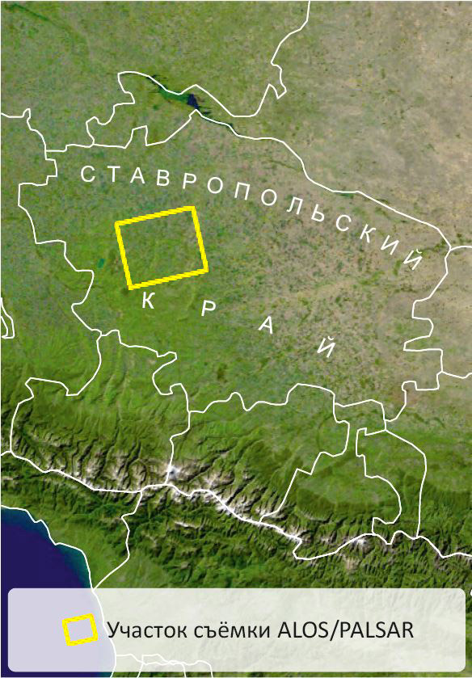
Ставропольский край - регион, где сельское хозяйство - одна из важнейших отраслей экономики с развитыми
и земледелием, и животноводством; распахано и обрабатывается более 80% площади.
В структуре посевов исследуемой территории (Шпаковский район, расположенный в западной части края) летом
2009 г. преобладали озимые зерновые (пшеница и ячмень), яровые колосовые (ячмень, просо), зернобобовые
(горох, соя),
технические (подсолнечник, лён), кормовые (однолетние и многолетние травы, зерносмеси) культуры, озимый
рапс.
Для определения агротехнического состояния пахотных
земель использована интерферометрическая пара радиолокационных снимков ALOS/PALSAR, полученных 21 июня и
6 августа
2009 г. Данные представлены в комплексном виде, т.е. имеют и амплитудную, и фазовую составляющие.
Предварительная обработка данных включала следующие
этапы: некогерентное накопление, автоматическую корегистрацию, фильтрацию спекл-шума и
ортотрансформирование.
Составлен цветной синтезированный снимок из данных двух съемок, где красный цвет присвоен
амплитудной составляющей изображения раннего срока съемки (21.06.2009 г.),
зелёный - амплитудной составляющей позднего срока съемки (06.08.2009 г.), а синий - изображению
когерентности, созданному на основе фазовой информации,
содержащейся в материалах этих двух съемок.
 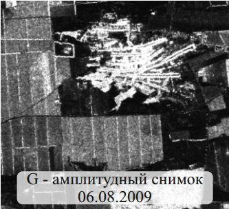 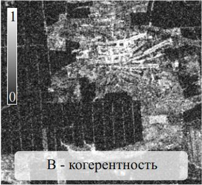
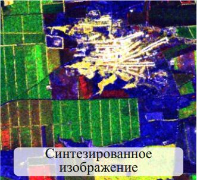 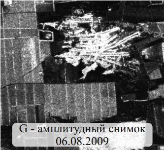 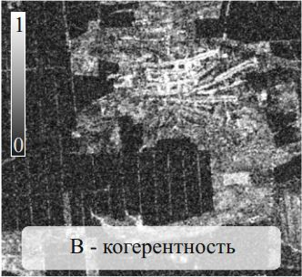
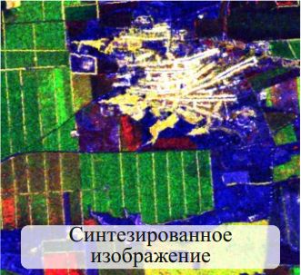
Создание цветного синтезированного
разновременного снимка с изображением когерентности
На амплитудных изображениях сельскохозяйственные угодья выглядят по-разному в зависимости от их
состояния: самые
тёмные участки - сухие мелкокомковатые почвы без растительности, несколько ярче выглядят влажные и
распаханные почвы. Наличие зелёной растительности приводит к увеличению яркости,
причём яркость изображения тем выше, чем больше объём фитомассы.
Величина когерентности характеризует степень сходства двух разновременных снимков, она принимает
значения от 0 до 1, и на ее основе можно получить сведения об изменениях на
местности. Тёмные участки на изображении когерентности соответствуют ее низким значениям, что
характеризует существенные изменения,
произошедшие между съёмками (например, уборка сельскохозяйственных культур), светлые участки - это
высокие значения когерентности, что соответствует стабильному
состоянию объектов (здания, участки открытой почвы). Таким образом, разные цвета на созданном цветном
синтезированном снимке из двух разновременных амплитудных изображений
и изображения когерентности позволяют распознавать различные объекты за счёт разной величины обратного
рассеяния и выявлять их изменения на основе значений когерентности.
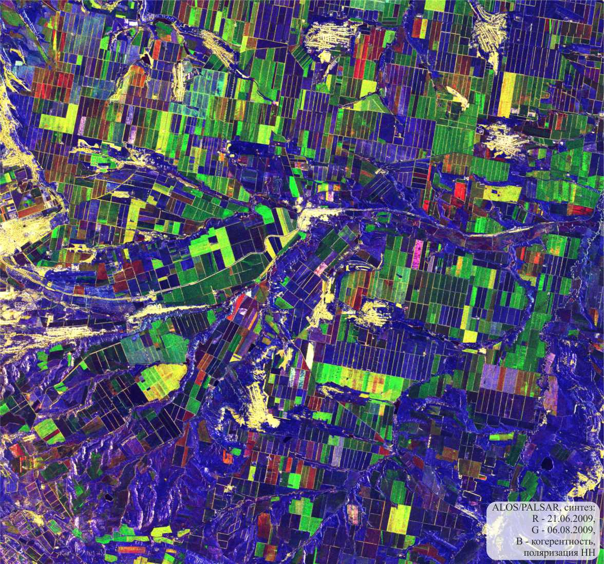
Рассмотрим увеличенные фрагменты этого снимка с разными видами сельскохозяйственных угодий, отмечая
особенности формирования их изображения. Для более уверенной интерпретации
радиолокационного снимка фрагменты сопровождаются синтезированными снимками в видимом и ближнем
инфракрасном диапазоне (которые ниже названы снимками в оптическом диапазоне),
полученными в сроки, примерно соответствующие срокам радиолокационных съемок.
| Изображение полей с активно вегетирующими сельскохозяйственными
культурами |
|
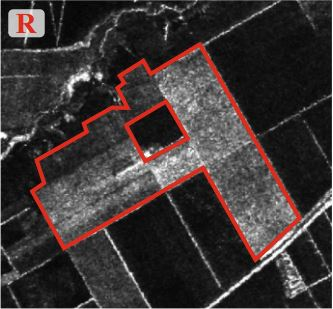
|

|
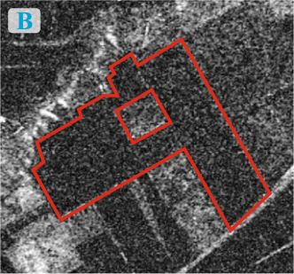
|

|
| На синтезированном разновременном радиолокационном снимке ярко-зелёный цвет,
соответствующий полям с активно вегетирующими сельскохозяйственными культурами,
объясняется низким значением яркости (свидетельствущем о начальной стадии развития посевов
культур) на амплитудном изображении от 21.06.2009, которому присвоен красный цвет (R),
существенно большей их яркостью на изображении от 06.08.2009 (зеленый цвет, G) и низкими
значениями когерентности за счёт произошедших изменений,
обусловленных развитием посевов (синий цвет, B). |
|
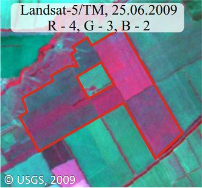
|

|
Усиление интенсивности красного цвета на втором снимке (03.08.2009) в оптическом диапазоне
свидетельствует об увеличении биомассы растений на выделенных полях,
так как по мере роста растений увеличивается их отражательная способность в ближнем инфракрасном
участке спектра (4 съёмочная зона системы Landsat-5/TM). |
Изображение полей с убранными за период между съёмками
сельскохозяйственными культурами |

|
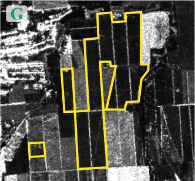
|
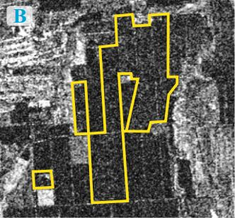
|
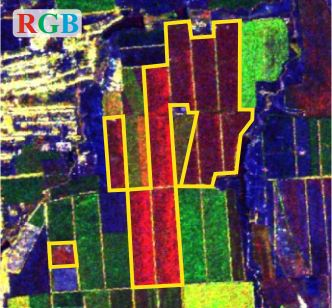
|
| Поля с убранными за период между съёмками сельскохозяйственными культурами
изображаются красным цветом: R - относительно высокая яркость на снимке от 21.06.2009 г.
обусловлена высокими значениями коэффициента обратного рассеяния от вегетирующих
сельскохозяйственных культур, G - низкая яркость на снимке от 06.08.2009 г. соответствует слабой
интенсивности обратного сигнала от открытой почвы после уборки культур, B - низкая яркость на
изображении когерентности соответствует низким её значениям из-за произошедших изменений. |
|
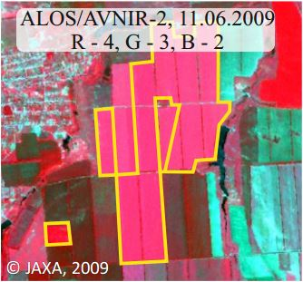
|

|
Изменение цвета этих полей с красного на зелёно-голубой на разновременных снимках в
оптическом диапазоне свидетельствует о наличии растительности
на снимке от 11.06.2009 г. и об её отсутствии на снимке от 27.07.2009 г. |
Изображение полей под паром |
|
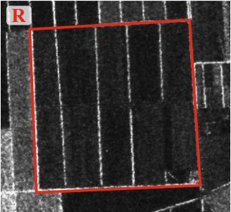
|

|
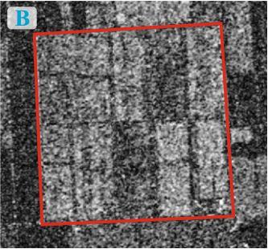
|

|
Поля под паром и другие участки открытой почвы на синтезированном разновременном
радиолокационном снимке изображаются синим цветом:
R и G - низкая яркость на амплитудных снимках обоих сроков обусловлена низкими значениями
коэффициента обратного рассеяния от относительно ровной поверхности, B - высокая яркость на
изображении когерентности связана с высокими её значениями из-за отсутствия изменений.
Ярко-жёлтые линии между полями - лесополосы, характеризующиеся высоким уровнем отраженного
радиосигнала в оба срока съемки и, как следствие, высокой яркостью на амплитудных снимках. При
этом такие участки характеризуются относительно низкими значениями когерентности (т.е. имеют
низкую яркость на изображении, которому присвоен синий цвет), что связано с постоянным движением
частей деревьев.
|

|
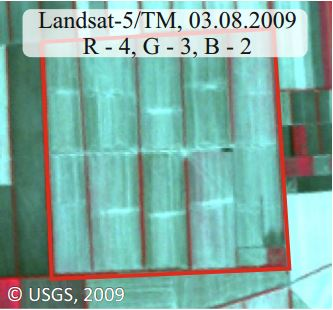
|
Практически полное отсутствие изменений видно и на обоих разновременных снимках в оптическом
диапазоне: голубо-зелёный цвет соответствует открытой почве.
На синтезированных снимках Landsat лесополосы изображаются красным цветом, характерным для
вегетирующей растительности, имеющей высокую яркость в ближней инфракрасной зоне спектра.
|
Изображение полей после распашки или полива |
|
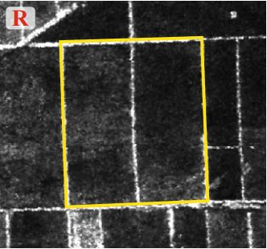
|
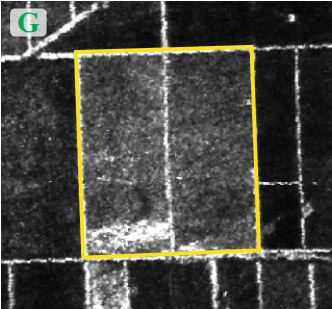
|

|
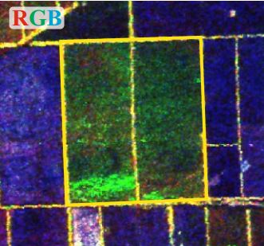
|
| Поля после распашки или полива на синтезированном разновременном радиолокационном
изображении имеют зелёный цвет
(более темный, чем поля, занятые активно вегетирующими культурами): R - низкая яркость на снимке
от 21.06.2009 г. обусловлена низкими значениями коэффициента обратного рассеяния от сухой
мелкокомковатой почвы,
G - некоторое увеличение яркости на снимке от 06.08.2009 г. связано с увеличением интенсивности
обратного сигнала предположительно за счёт повышения влагосодержания или шероховатости почвы, B
- низкая яркость на изображении когерентности соответствует низким значениям этого параметра
из-за произошедших изменений. |
|
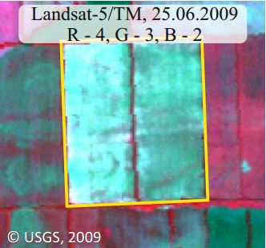
|

|
На разновременных снимках в оптическом диапазоне яркость сухих и мелкокомковатых
почв выше (снимок от 25.06.2009), чем влажных почв или распаханных почв с крупными комьями
(снимок от 03.08.2009). |
Изображение естественной растительности |
|
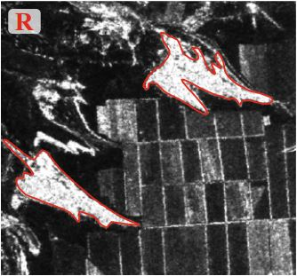
|

|

|
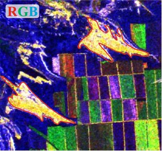
|
| Густая древесно-кустарниковая растительность на синтезированном разновременном
радиолокационном снимке изображается жёлтым цветом: R и G - высокая яркость на обоих амплитудных
изображениях объясняется высокими значениями интенсивности обратного сигнала за счёт объёмного
рассеяния, B - средняя яркость на изображении, которому при цветовом синтезе присвоен синий
цвет, обусловлена не самыми высокими значениями когерентности из-за постоянного изменения
положения листвы и ветвей деревьев под действием ветра. |

|
На снимке в оптическом диапазоне такая растительность изображается красной из-за высокой
отражательной способности в ближней ИК части спектра. В отличие от сельскохозяйственных полей,
имеющих в основном прямоугольную форму, древесно-кустарниковые заросли характеризуются
неправильной формой в плане. |
Изображение населённых пунктов |
|
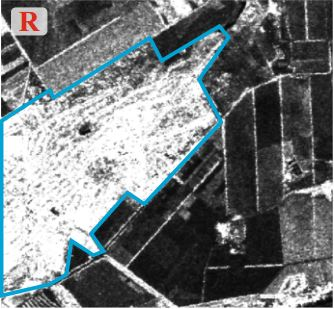
|

|

|

|
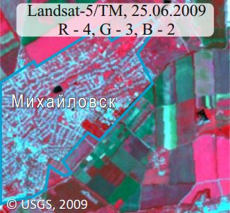Населённые пункты из-за большого разнообразия присутствующих в них объектов на
синтезированном радиолокационном снимке изображаются сочетанием разных цветов.
Белым цветом изображаются здания и сооружения: R и G - высокая яркость на обоих амплитудных
снимках объясняется высокой интенсивностью обратного сигнала из-за преобладания двукратного
отражения радиоволн и, вероятно, наличия металлических объектов, B - высокая яркость на
изображении когерентности обусловлена её высокими значениями благодаря стабильности объектов.
Растительность на приусадебных участках имеет жёлтый цвет: R и G - высокая яркость
обусловлена высокой интенсивностью обратного сигнала из-за преобладания объёмного рассеяния, B -
невысокая яркость на изображении в синем канале соответствует относительно низким значениям
когерентности из-за непостоянства положения листвы и ветвей деревьев.
Дороги изображаются синим цветом: R и G - низкая яркость на амплитудных снимках
соответствует низким значениям обратного сигнала от гладких асфальтированных поверхностей,
B - высокая яркость на изображении когерентности обусловлены высокими значениями этого параметра
из-за отсутствия изменений.
|
Изображение асфальтированных участков |

|
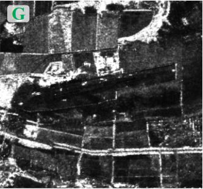
|
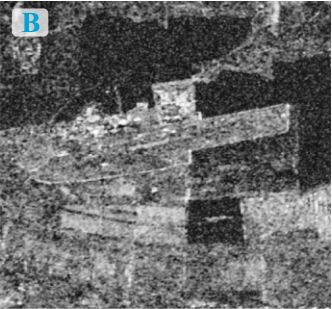
|

|

|
Асфальтированные дороги и взлётно-посадочные полосы на синтезированном
радиолокационном снимке изображаются синим цветом: R и G - низкая яркость на обоих амплитудных
изображениях за счёт низких значений коэффициента
обратного рассеяния, связанных с однократным отражением радиоволн в сторону, противоположную
радиолокатору, B - высокая яркость, обусловленная высокими значениями когерентности стабильных
во времени объектов.
На снимке в видимом диапазоне асфальтированные поверхности имеют светло-серый цвет.
Ярко-жёлые полосы вдоль автомобильных дорог на радиолокационном изображении и тёмно-зелёные
на снимке в видимом диапазоне - лесозащитные полосы.
|
Изображение объектов гидрографии |
| 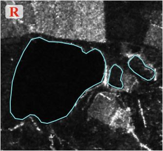 |
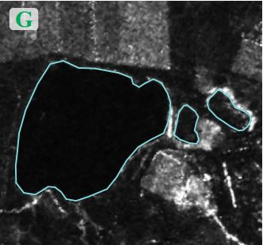 |
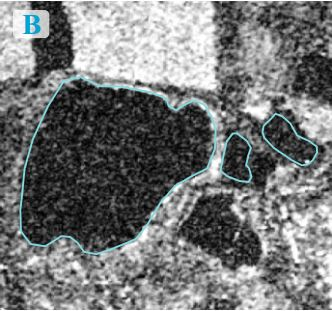 |

|
 |
На синтезированном разновременном радиолокационном снимке водные объекты имеют
тёмно-синий или чёрный цвет: R и G - низкая яркость на обоих амплитудных изображениях
обусловлена низкими значениями коэффициента
обратного рассеяния за счёт однократного отражения радиоволн в сторону от радиолокатора, B -
низкая яркость из-за низких значений когерентности, обусловленных
нестабильностью водной поверхности (рябь, волнение).
Бурый цвет большего по площади озера на снимке в видимом диапазоне обусловлен его
постепенным пересыханием и образованием соляной корки.
|
Наверх
|